An overview of indirect lighting
In the real world, light doesn't have to go directly to your eyes or directly to an object then to your eyes, as our Task 3 implementation would have you believe.
Instead, it bounces around all over the place and some of it happens to end up in your eyes.
Simulating all the light bouncing around in the scene is computationally infeasible, to say the least.
Instead, we can go in the reverse direction: send rays out of the camera, like we've been doing, and have them bounce around in various crazy ways.
At each bounce point, we can use our direct lighting calculation (one_bounce_illumination() in the code) from before to estimate how much light is coming into that point and out towards our ray, and accumulate that with the light we expect to come in from the other bounces. See the issue? To compute the indirect lighting at one point, we'll have to compute the direct lighting at that point and the indirect lighting at another point; it's an infinite loop where we need to compute indirect lighting before being able to compute it. In order to resolve this, we can limit our indirect lighting to some number of bounces $n$, and once we reach $n-1$ bounces, just return the one_bounce_illumination() as computed in Task 3 to avoid infinite loops.
So now it'll actually render in a finite amount of time, but there's a slight issue with our "maximum bounces" strategy. It's what's called a biased estimator: since we never get any contribution from light that bounces more than $n$ times, and the full contribution from all the bounces $\le n$, we're producing a bias towards smaller bounces of light which can eliminate softer detail. To avoid this, we implemented what's called (rather grimly) the Russian Roulette sampling strategy. Here, at every indirect bounce (after the first one), we have a continuation probability $c$ (set to something between $0.3$ and $0.4$), which is the probability that this bounce gets to keep accumulating light rather than just returning the light at this bounce immediately. Because we're effectively changing our sampling probabilities, we also have to normalize (divide) our incoming light by this new constant $c$ every time the Russian Roulette has a chance to stop the recursion, but doesn't, but now we have an unbiased estimator of indirect lighting and that's good enough for us to get a high quality render of the scene.
How do we actually compute it?
It's pretty much exactly as described above, but with a few more details.
In the code, the function at_least_one_bounce_illumination(Ray r, Intersection isect) handles direct lighting from objects (not light source -> camera with no bounces, though) as well as all of indirect lighting.
So, when this function is first called to estimate the light coming into the camera, the ray has a depth field of 0.
Whenever we handle bouncing a ray, we'll increment this depth in the ray we create, and continually check it against the max_ray_depth set by the viewer (if this is set to 0, we'll just return a 0 vector immediately so as not to process any bounces).
If the ray's depth reaches max_ray_depth - 1, we'll immediately return one_bounce_illumination(Ray r, Intersection isect) to handle the direct bounce of light in that direction for accumulation.
Otherwise, we can start handling the indirect bounces.
Essentially, what we want to do is compute the max_ray_depth - depth bounce lighting at this point along this given ray.
Intuitively, what this should be is the one_bounce_illumination() at this point (light coming directly from light sources and bouncing off along the input ray1), plus the illumination accumulated along all of the other max_ray_depth - depth - 1 bounces before this one (yes, before, because we're moving in the opposite direction that light travels).
This is assuming that we actually allow our light ray to continue bouncing: with the Russian Roulette sampling approach, we only continue with probability $c$ and stop iterating over the bounces with probability $1-c$, in which case we would just return the one_bounce_illumination().
How do we compute "everything else?"
Well, the light coming in from all the other bounces is equal to the light coming out from the bounce right before this one.
Using our bounce cutoff logic, that's exactly the at_least_one_bounce_illumination() computed at a ray of depth + 1 leaving from wherever it bounced from to land here!
What we should do, then, is sample a random bounce direction from our current location, and follow it along to wherever it ends up.
Then, we can recursively call at_least_one_bounce_illumination() at that point with a depth of depth + 1 compared to this point, and it will handle all the logic of computing the accumulated illumination for us!
Now, all we have to do is the same logic we did before for sampling with the Monte Carlo estimator: we multiply this incoming light received from the prior bounce point by the material's reflectance property with respect to the inward and outward angles, and by the cosine of the angle of the inward ray to the normal.
We also have to normalize by the probability density of sampling that ray, as well as the continuation probability c to account for the chance that we never got to this step.
The total light then is just the sum of the one_bounce_illumination() at this point and the appropriately scale at_least_one_bounce_illumination() at the new point.
Then, we can just return that total light bounce (or, if we're only computing $n$th bounce without accumulation, we return only the at_least_one_bounce_illumination(), and the Russian Roulette sampling doesn't apply).
Images
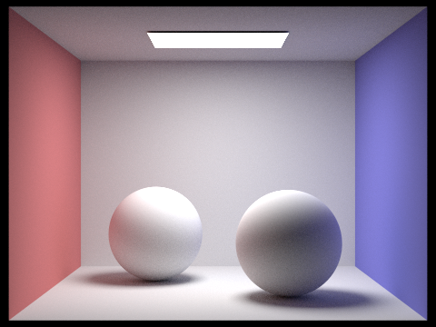
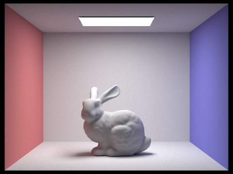
Samples of global illumination. Note the color of the walls reflecting onto the models in the center.

The bunny with direct lighting only and indirect lighting only.
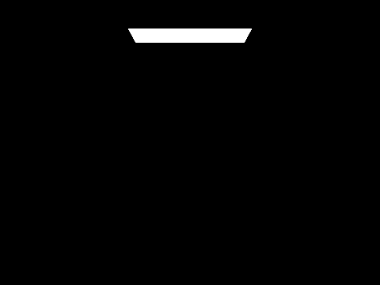
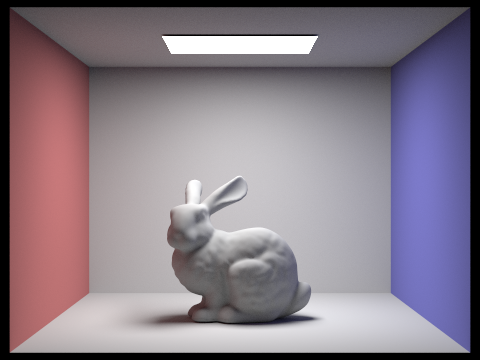
Samples of accumulated bunny renders. Notice how each image is progressively brighter and shows more reflected detail.
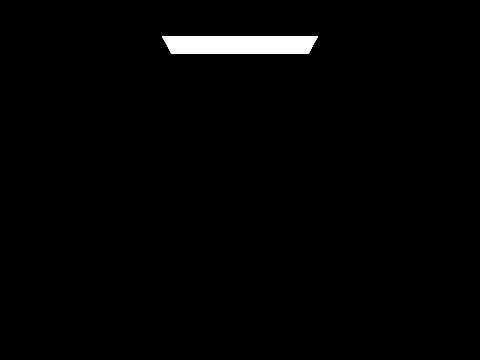
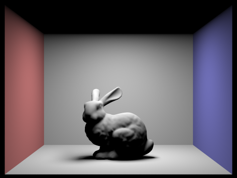
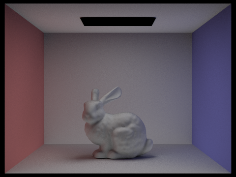
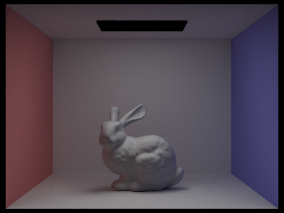
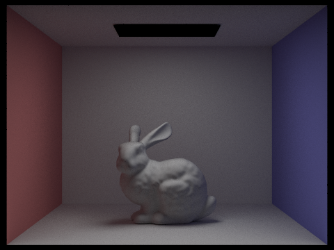
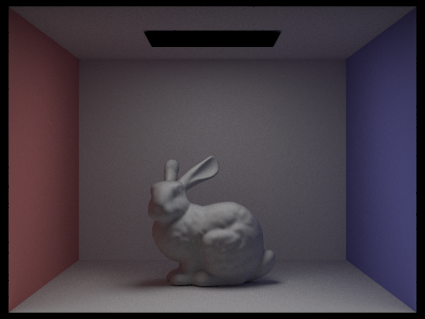
Samples of each light bounce in the bunny renders. Notice how each image is progressively darker and shows reflected details.
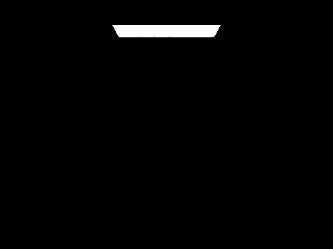
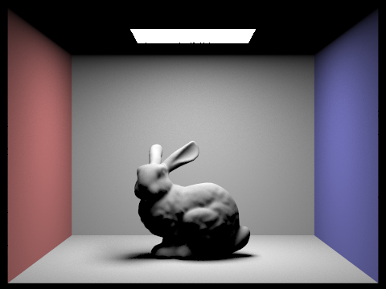
Samples of russian roulette rendering at the given depths: 0, 1, 2, 3, 4, 5, and 100.
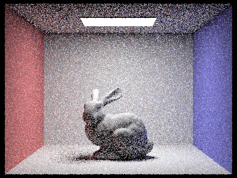
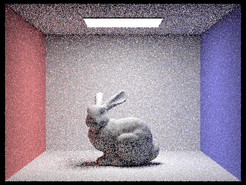
Samples of the bunny rendered at the given sample rates: 1, 2, 4, 8, 16, 64 and 1024. Notice how the noise gets reduced as the sample rate increases.
Footnotes
To be precise, the ray is actually pointing in the opposite direction of the direction the light is bouncing, which is something we have to account for in the implementation, but is not that important conceptually.